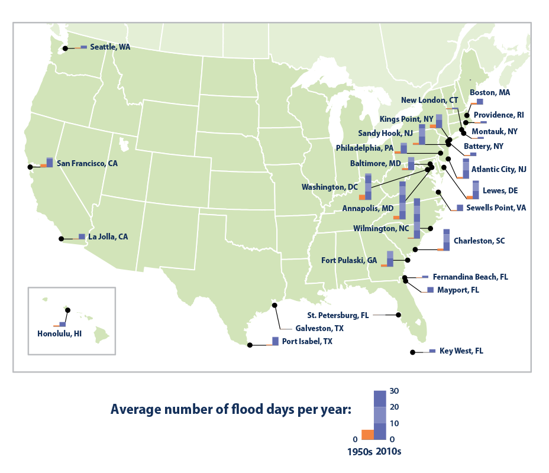
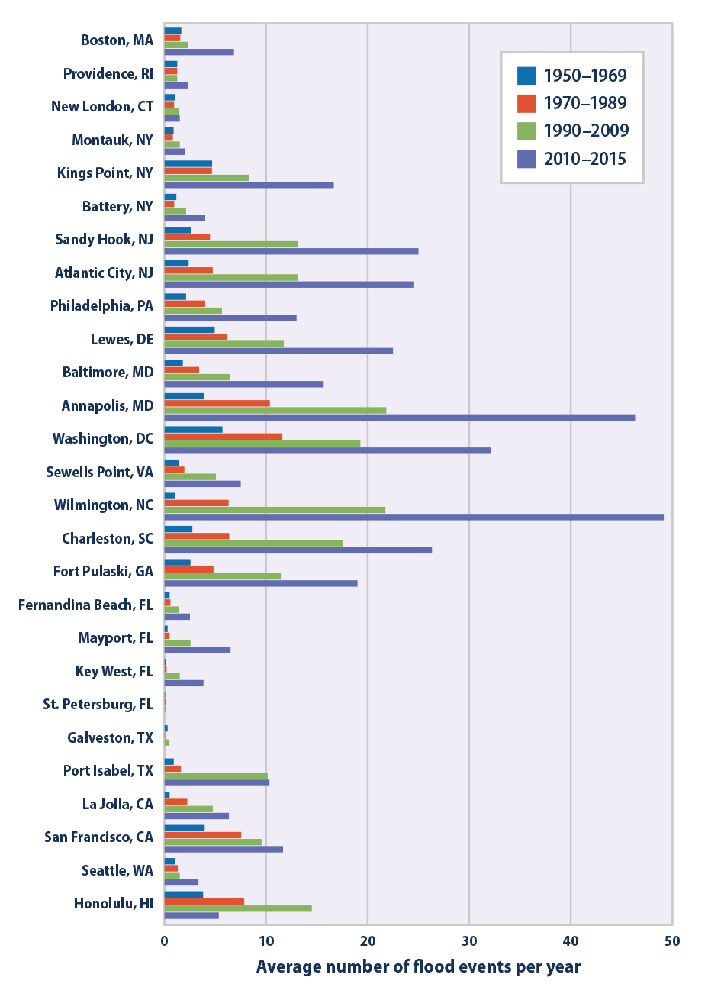

Climate Change Indicators: Coastal Flooding
This indicator shows how the frequency of coastal flooding has changed over time.
- 

This map shows the average number of days per year in which coastal waters rose above the local threshold for minor flooding at 27 sites along U.S. coasts. Each small bar graph compares the first decade of widespread measurements (the 1950s in orange) with the most recent decade (the 2010s in purple).
Data source: NOAA, 20163
Web update: August 2016 - 
This graph shows the average number of days per year in which coastal waters rose above the local threshold for minor flooding at 27 sites along U.S. coasts. The data have been averaged over multi-year periods for comparison.
Data source: NOAA, 20164
Web update: August 2016
Key Points
- Flooding is becoming more frequent along the U.S. coastline. Nearly every site measured has experienced an increase in coastal flooding since the 1950s (see Figure 1). The rate is accelerating in many locations along the East and Gulf Coasts (see Figure 2).
- The Mid-Atlantic region suffers the highest number of coastal flood days and has also experienced the largest increases in flooding. Since 2010, Wilmington, North Carolina, has flooded most often—49 days per year—followed by Annapolis, Maryland, at 46 days per year. Annapolis, Wilmington, and two locations in New Jersey (Sandy Hook and Atlantic City) have also seen some of the most dramatic overall increases in frequency: floods are now at least 10 times more common there than they were in the 1950s. The Mid-Atlantic’s subsiding land and higher-than-average relative sea level rise both contribute to this increase in flooding (see the Sea Level indicator).
- Flooding has increased less dramatically in places where the local flood threshold is higher (for example, the Northeast and locations on the Gulf of Mexico) or where relative sea level has not risen as quickly as it has elsewhere in the United States (for example, Hawaii and the West Coast, as shown by the Sea Level indicator).
Background
Changing sea levels are affecting human activities in coastal areas. Rising sea level inundates low-lying wetlands and dry land, erodes shorelines, contributes to coastal flooding, and increases the flow of salt water into estuaries and nearby groundwater aquifers. Higher sea level also makes coastal infrastructure more vulnerable to damage from storms.
“Relative sea level change” refers to the height of the ocean relative to the land at a particular location. As relative sea level rises due to climate change (see the Sea Level indicator), one of the most noticeable consequences is an increase in coastal flooding. Flooding typically occurs during seasonal high tides (“king tides”) and storms that push water toward the shore. In recent years, however, coastal cities are increasingly flooding on days with less extreme tides or little wind, even on sunny days. Floods are happening more often as rising sea level reduces the gap between average sea level and the height of the land.
Many coastal cities have defined minor or “nuisance” flooding thresholds. When water rises above this level, minor flooding typically occurs in some streets, many storm drains become ineffective, and a coastal flood advisory may be issued. Recurrent coastal flooding can cause impacts such as frequent road closures, reduced stormwater drainage capacity, and deterioration of infrastructure not designed to withstand frequent inundation or exposure to salt water. These impacts are of particular concern because more than 8.6 million Americans live in areas susceptible to coastal flooding, and more than $1 trillion of property and structures is within a few feet of current sea level.1 Coastal flooding can also affect human health—for example, by increasing the risk that drinking water and wastewater infrastructure will fail, putting people at risk of being exposed to pathogens and harmful chemicals.2
About the Indicator
This indicator tracks coastal flooding based on measurements from tide gauges at locations along U.S. coasts. These devices measure water levels continuously, which makes them ideal for measuring the height of the tides, tracking long-term local relative sea level rise, and detecting coastal floods. This indicator focuses on 27 tide gauges where local weather forecasting offices have defined thresholds for minor, moderate, and major flooding and where complete data are available from 1950 to present. The indicator tracks the number of days per year when each tide gauge measured water that was higher than the minor flooding level. Figure 1 shows the 27 stations on a map and compares the first and last decades of data, while Figure 2 provides a more detailed comparison using all the available years of data.
Indicator Notes
Flood thresholds are defined locally based on observed impacts. They vary from one city to another, depending on land cover, topography, and the presence of flood defenses such as seawalls. For example, the minor flood level is set at approximately 10 inches above an average high-water mark in Wilmington, North Carolina, compared with 31 inches in Galveston, Texas. A city with flat land and infrastructure close to sea level will likely have a lower flooding threshold than a more elevated city, and it will naturally experience more days of coastal flooding. For this reason, it is more useful to compare change over time at a single location than it is to compare patterns across different locations.
This indicator is limited to tide gauges with defined flood levels and several decades of data. These tide gauges tend to be clustered along the East Coast, particularly in the Mid-Atlantic region. Other parts of the U.S. coast have fewer tide gauges with defined flood levels and long-term data.
Data Sources
This indicator is based on hourly water level data that are publicly available from the National Oceanic and Atmospheric Administration at: https://tidesandcurrents.noaa.gov. Flood thresholds are defined by the National Weather Service at: http://water.weather.gov/ahps/forecasts.php.
Technical Documentation
References
1. Melillo, J.M., T.C. Richmond, and G.W. Yohe (eds.). 2014. Climate change impacts in the United States: The third National Climate Assessment. U.S. Global Change Research Program. http://nca2014.globalchange.gov.
2. Trtanj, J., L. Jantarasami, J. Brunkard, T. Collier, J. Jacobs, E. Lipp, S. McLellan, S. Moore, H. Paerl, J. Ravenscroft, M. Sengco, and J. Thurston. 2016. Chapter 6: Climate impacts on water-related illness. The impacts of climate change on human health in the United States: A scientific assessment. U.S. Global Change Research Program. https://health2016.globalchange.gov.
3. NOAA (National Oceanic and Atmospheric Administration). 2016 update to data originally published in: NOAA. 2014. Sea level rise and nuisance flood frequency changes around the United States. NOAA Technical Report NOS CO-OPS 073. https://tidesandcurrents.noaa.gov/publications/NOAA_Technical_Report_NOS_COOPS_073.pdf.
4. NOAA (National Oceanic and Atmospheric Administration). 2016 update to data originally published in: NOAA. 2014. Sea level rise and nuisance flood frequency changes around the United States. NOAA Technical Report NOS CO-OPS 073. https://tidesandcurrents.noaa.gov/publications/NOAA_Technical_Report_NOS_COOPS_073.pdf.
Learn about other indicators in this section